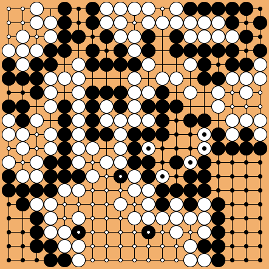

| Kobayashi Koichi | Kobayashi Koichi B+R 1976-05-20 |
Kobayashi Koichi W+1.5 1976-06-17 |
Kobayashi Koichi B+6.5 1976-09-16 |
Kobayashi Koichi B+R 1976-11-04 |
| Fujisawa Shuko | ||||
| Okubo Ichigen | Okubo Ichigen W+R 1976-03-18 |
|||
| Sonoda Yuichi | ||||
| Sato Sunao | Sato Sunao W+R 1976-05-06 |
Sato Sunao B+0.5 1976-06-10 |
||
| Kada Katsuji | ||||
| Otake Hideo | Otake Hideo W+R 1976-03-18 |
|||
| Chino Tadahiko | ||||
| Rin Kaiho | Rin Kaiho W+R 1976-02-26 |
Rin Kaiho W+R 1976-08-18 |
Rin Kaiho B+R 1976-09-09 |
|
| Yamabe Toshiro | ||||
| Kudo Norio | Kudo Norio W+R 1976-03-25 |
|||
| Kurahashi Shozo | ||||
| Shimamura Toshihiro | Shimamura Toshihiro W+7.5 1976-03-11 |
Shimamura Toshihiro W+R 1976-06-03 |
||
| Miyamoto Naoki | ||||
| Sato Kaoru | Sato Kaoru W+R 1976-03-03 |
|||
| Kamimura Haruo | ||||
| Sugiuchi Masao | Sugiuchi Masao B+0.5 1976-02-26 |
Sugiuchi Masao B+R 1976-06-03 |
Sugiuchi Masao B+10.5 1976-09-23 |
Sugiuchi Masao B+0.5 1976-10-28 |
| Shinohara Masami | ||||
| Cho Chikun | Cho Chikun B+0.5 1976-05-12 |
|||
| Miyamoto Yoshihisa | ||||
| Sakata Eio | Sakata Eio W+R 1976-06-17 |
Sakata Eio W+R 1976-07-01 |
||
| Ohira Shuzo | ||||
| Kano Yoshinori | Kano Yoshinori B+2.5 1976-04-01 |
|||
| Ota Seido | ||||
| Hashimoto Yoshimi | Hashimoto Yoshimi B+2.5 1976-03-11 |
Hashimoto Yoshimi +F |
Hashimoto Yoshimi B+5.5 1976-10-12 |
|
| Mizuta Yoshihiro | ||||
| Miyashita Shuyo | Miyashita Shuyo B+10.5 1976-03-04 |
|||
| Iwamoto Kaoru | ||||
| Ishida Yoshio | Ishida Yoshio W+0.5 1976-04-08 |
Ishida Yoshio B+R 1976-08-26 |
||
| Kurosawa Tadanao | ||||
| Yoshida Yoichi | Yoshida Yoichi W+R 1976-02-19 |
|||
| Tainaka Shin |
| date | black | white | result | #mv | sgf |
|---|---|---|---|---|---|
| 1976-11-29 | Sugiuchi Masao | Kobayashi Koichi | B+4.5 | 238 | sgf |
| 1976-12-07 | Kobayashi Koichi | Sugiuchi Masao | B+R | 99 | sgf |
| 1976-12-16 | Sugiuchi Masao | Kobayashi Koichi | W+0.5 | 267 | sgf |
| 1977-01-06 | Kobayashi Koichi | Sugiuchi Masao | B+R | 173 | sgf |
Kobayashi Koichi won 3-1.
The 3rd game was miscounted. In fact the result is W+1.5.
